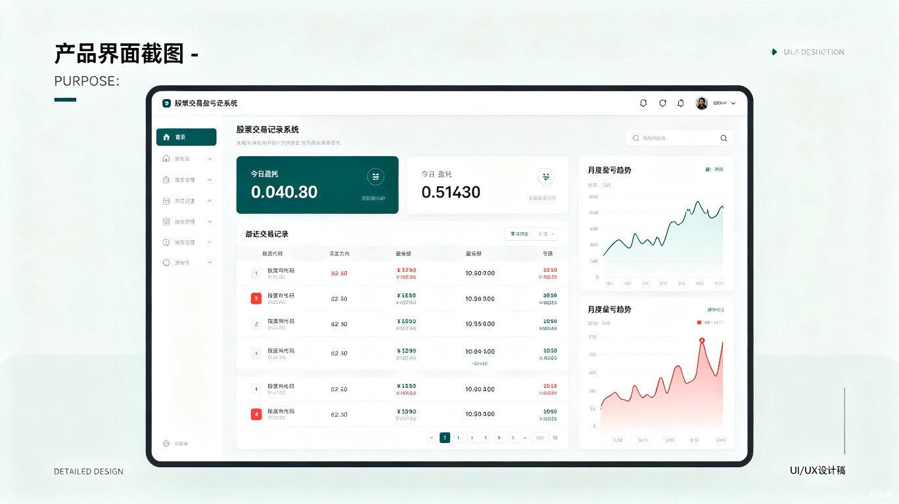
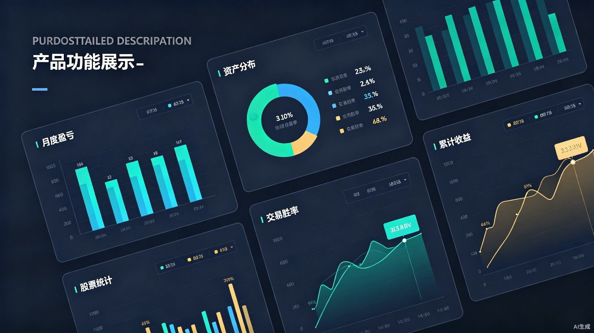

手动记录每一笔股票交易盈亏，唤醒你对金钱的敏感度
知行合一，从真实感知开始
不是因为缺乏信息，而是因为缺乏对盈亏的真实感知
现代交易软件让买卖股票变得像扫码支付一样简单，手指轻点即可完成。这种过度便捷导致交易决策变得轻率，缺乏深思熟虑的过程。
当盈亏只是屏幕上跳动的数字时，大脑无法形成真实的损失感知。就像电子支付让人对花钱没有实感一样，数字盈亏也在弱化我们的风险意识。
由于缺乏对真实盈亏的感知，散户往往在不知不觉中累积亏损。等到发现时，已经深陷其中。数据显示，超过70%的散户长期处于亏损状态。
一个专为散户设计的股票交易盈亏手动记录工具
与自动同步交易记录不同，行合一要求你在每次交易后，亲手输入盈亏数据。这个过程强迫你直面交易结果，让盈亏从抽象的数字变成真实的感受。
正如用纸笔记账比电子记账更能控制消费一样，手动记录股票盈亏能让你重新建立对金钱的敏感度。

快速记录每笔交易的盈亏金额、股票代码、买卖方向、交易理由和当下情绪。支持批量导入和快捷模板。
按日、周、月、年维度统计盈亏数据，直观展示累计收益曲线和回撤幅度，一目了然掌握账户状态。
自动计算交易胜率、盈亏比、最大单笔盈亏等关键指标，帮助你客观评估交易策略的有效性。
记录每笔交易时的情绪状态（贪婪、恐惧、冷静等），分析情绪与盈亏的关联，发现你的交易心理模式。
自定义设置日亏损上限、周亏损上限，当接近阈值时主动提醒，帮助你及时刹车，避免情绪化加仓。
支持导出Excel和PDF格式的交易报告，方便长期存档和深度分析，让你的交易历史有迹可循。
让每一笔盈亏都清晰可见

行合一提供丰富的数据可视化功能，将枯燥的数字转化为直观的图表。从月度盈亏柱状图到资产分布饼图，从交易胜率趋势到累计收益曲线，全方位呈现你的交易表现。
通过数据洞察，你可以发现自己的交易规律：哪些时段容易盈利？什么情绪下容易亏损？哪种策略胜率最高？
清晰记录每一笔交易，不留盲区
| 日期 | 股票代码 | 操作 | 盈亏金额 | 盈亏比例 | 交易理由 | 情绪 |
|---|---|---|---|---|---|---|
| 2026-06-24 | 600519 | 卖出 | +¥2,350 | +5.2% | 达到目标价位 | 冷静 |
| 2026-06-23 | 000858 | 卖出 | -¥890 | -2.1% | 止损离场 | 后悔 |
| 2026-06-20 | 300750 | 卖出 | +¥4,120 | +8.7% | 利好消息兑现 | 兴奋 |
| 2026-06-18 | 002594 | 卖出 | -¥1,560 | -3.4% | 破位下跌 | 焦虑 |
| 2026-06-15 | 600036 | 卖出 | +¥780 | +1.8% | 短线获利 | 平静 |
在券商APP完成股票买卖操作
打开行合一，输入盈亏数据和交易心得
查看统计数据，优化交易策略
"知是行之始，行是知之成。真正的投资智慧，来自于对每一笔交易的深刻感知与反思。"— 行合一产品理念
刚入股市不久，交易频繁但缺乏记录习惯。通过行合一建立正确的交易记录意识，从一开始就养成良好习惯。
有一定交易经验但盈亏不稳定。通过数据复盘发现交易中的盲点，优化策略，提升胜率。
容易受情绪影响做出冲动决策。通过记录情绪和盈亏的关联，逐步建立理性交易习惯。
每一次手动记录，都是对自我的一次审视。让盈亏不再只是数字，而是成长的印记。
立即体验行合一